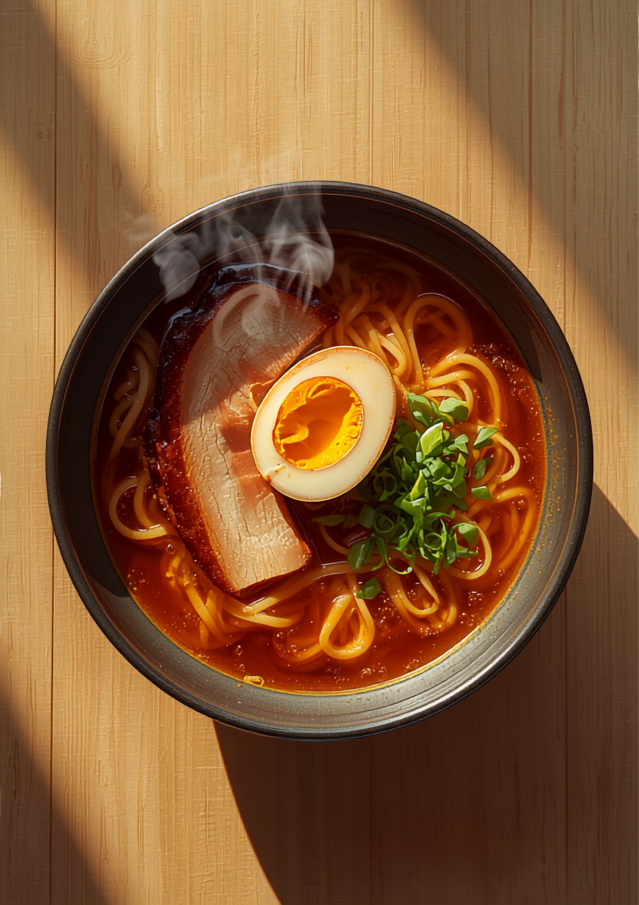

夜、18時から。売り切れ仕舞い。
焼きおにぎりまで大きい炭火焼鳥。「この物価高なのに神みたいなお店」と言われる室住団地そばの一軒です。天神や西新に出るより、満足度はこちらが上かもしれません。
昼は火・木・土だけ。11:30〜13:30。
特製しょうゆとんこつと鶏しお、スープだけでもメニューになるくらいの2本立て。つるつるモチモチの平打ち麺は、ずっと噛んでいたくなる評判の一杯です。

まず串が大きい。焼きおにぎりも大きい。それでいて価格はお手頃。家族連れなら奥の席へどうぞ。
18:00ごろから・売り切れ仕舞い・日曜定休週3日だけ現れるもうひとつの顔。2種類のラーメンはどちらもこだわりの丁寧な味、と評判です。
火・木・土のみ 11:30〜13:30「天神や西新行くより、こちらのお店に行った方が満足度MAX間違えないです！」
Googleの口コミより
「焼鳥のネタがまず大きい！焼きおにぎり含め大きい！！そして、美味しい！」
Googleの口コミより
「麺は自家製麺とのことで、平打ち細麺でつるつるモチモチして、ずっと噛んでいたいくらい」
Googleの口コミより
「店主さんも優しい方で感じ良かったです。又、行きたいお店です。」
Googleの口コミより
「ただ入り口が低いのが難点です(笑)」
Googleの口コミより。頭上にはご注意を。